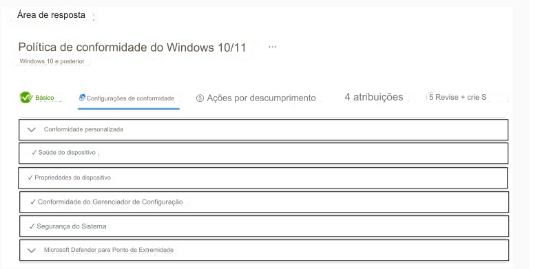

236- PONTO DE ACESSO
Você tem uma assinatura do Microsoft 365.
A assinatura contém 1.000 computadores que executam o Windows
11 e estão inscritos no Microsoft Intune.
Você planeja criar uma política de conformidade que tenha as seguintes opções habilitadas:
• Exigir que a inicialização segura esteja habilitada no dispositivo.
• Exigir que o dispositivo esteja na classificação de risco da máquina ou abaixo dela.
Quais são as duas configurações de conformidade que você deve definir?
Para responder, selecione as configurações apropriadas na
área de resposta.
NOTA: Cada seleção correta vale um ponto.
